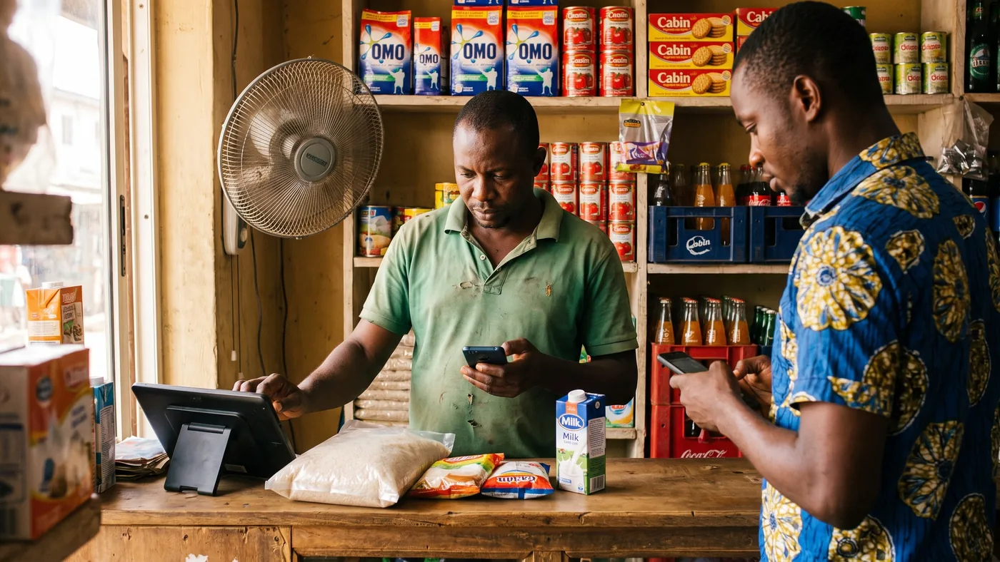

Fake Alerts and Failed Transfers: Protecting Your Nigerian Shop's Money
A customer is in a hurry, taps their phone, and turns the screen toward you: "See, I don land." You glance at it, hand over the goods, and go back to the queue. Twenty minutes later you check your own bank app and there's nothing there. That single habit, trusting a screen you didn't check yourself, is how fake alert scams and failed POS transactions quietly drain more money out of small Nigerian shops than most owners realise, one small sale at a time.

How the fake alert scam actually works
A fake alert is a message built to look exactly like your bank's transfer notification, sender name, amount and reference number included, except no money has actually reached your account. Fraudsters install apps built specifically to generate these fabricated messages, and they show them to traders, POS agents and shop owners who are busy, trust the customer, or simply don't have a habit of checking their own account first.
Related reading: what a POS really costs per year, pharmacy POS in Southeast Asia, and offline POS system.
The danger is timing. Once goods have left your counter, the fraud is already done, and you're left chasing something that may never come back. Scammers lean on that: they act rushed, blame "network" or "bank maintenance" for the delay, and push you to hand over the item before you've verified anything.
None of this is rare or theoretical. It's common enough that Nigerian consumer and finance publications run regular guides on spotting it, precisely because small traders and POS operators are named as the group most targeted.
Verifying a transfer without slowing down your queue
The fix is simple to describe and hard to keep up under pressure: never release goods on the strength of a screen you didn't check yourself. A screenshot proves the customer can operate their phone, nothing more.
A few habits make this fast enough to survive a busy counter:
- Open your own banking app or check your own SMS alert, from your own phone, every single time. Not the customer's phone, not their screenshot.
- Check the balance, not just the alert. An alert can be faked far more easily than a balance that has actually moved.
- Treat urgency as a warning sign, not a reason to skip the check. A genuine customer will wait the ten seconds it takes you to look at your own phone.
- Never call a number the customer gives you to "confirm" a payment. Use your bank's own line, saved in your phone in advance.
- Keep your PIN and OTP to yourself, even mid-conversation about a "failed transfer." That request is itself a common opening for a second scam.
If a payment genuinely hasn't landed yet, that's fine, ordinary transfers sometimes take a few minutes. The rule isn't "never trust a delay," it's "never release goods before you've seen the money yourself."
When the card terminal says failed but the customer says paid
This one is different from a fake alert, and just as costly if you get it wrong. Sometimes a card or terminal transaction genuinely debits the customer and still fails to credit you, because of a network timeout between the terminal, the switch and the banks involved. The customer isn't lying, but you still haven't been paid.
Poor network coverage has been a long-running complaint from POS operators and traders across Nigeria, and it's exactly why terminals sometimes show "failed" or "declined" on your side while the customer's alert shows a debit on theirs. The two screens are not talking about the same event yet.
The rule here is the same as with a fake alert: don't release goods until your own side shows the credit. If the customer has genuinely been debited, that money is protected. The Central Bank of Nigeria revised its rules in 2020 so that disputed or failed POS and web transactions must be resolved within 72 hours, down from the previous five working days, and that refund is between the customer and their bank, it doesn't depend on you having already handed over the goods.
What to do in the moment: apologise, explain the terminal shows a failure on your end, and offer a second way to pay, cash, a fresh transfer, or a different card. Most honest customers understand this immediately, because it's happened to them too.
Why your till stops balancing
Nigerian small businesses lose real money to leaks that have nothing to do with fraud: a sale that never got written down, a transfer nobody double-checked landed, a debt that nobody followed up on. None of that shows up as theft. It just quietly disappears from a total nobody was tracking in real time.
The fix is a habit, not a piece of software: record the payment method at the moment of the sale, not from memory at closing time. Cash gets counted physically. Transfers get matched against your actual bank app, one by one, not assumed because a customer said so. Card and terminal payments get matched against the terminal's own settlement report.
At close, compare three totals against what your system says you took that day: cash in the drawer, transfers confirmed in your bank app, and card settlements from the terminal. A mismatch tells you exactly where to look, which payment method and which part of the day, instead of leaving you to search the whole day by memory.
A sale that isn't recorded the moment it happens isn't a small mistake. It's a gap that grows every day nobody notices it.
This is not just an owner's problem
If you're not the one always standing at the till, your staff are making these exact judgement calls every time you're not looking. A cashier under pressure from a queue and a customer waving a phone is exactly the situation a fake alert scam is built for.
Two things help. First, make "check your own app before releasing goods" a rule every employee is trained on, not something you assume they'll figure out. Second, give each employee their own login or PIN so every sale is tied to a name, not a shared account, and any pattern, repeated unconfirmed transfers, discounts, voids, shows up against one person instead of getting lost in the daily total. We go deeper on setting per-employee limits in our guide to customer tabs and staff discount limits.
Where digabloPos fits, and where it doesn't
digabloPos
digabloPos records the payment method on every sale, cash, card or mobile money, and generates a daily cash reconciliation report with an unalterable transaction history and an audit trail showing which employee recorded what and when. That's exactly the discipline this article is about: a total you can check against reality instead of reconstructing from memory. Everything runs on its full offline mode, so a network outage doesn't stop you from recording a sale correctly, it syncs once the connection returns. Permissions can be set per employee, including a cap on discounts, so a junior cashier's mistakes stay visible and bounded rather than invisible.
Be clear-eyed about the limit. digabloPos does not verify bank transfers, detect fake alerts, or sit inside your bank account, and no POS software genuinely can. It is not a payment processor and it does not process or settle any specific scheme like Moniepoint, OPay, Palmpay or bank transfer itself, it stays payment-method agnostic and charges no forced payment commission, so you keep whichever method's cost advantage you'd otherwise lose to a processor. The base plan is free forever for 2 employees with 30 days of history; a third employee is roughly $5 a month and unlimited report history is a paid module at roughly $20 a month, so check the current list before you commit.
👍 Strengths
- Daily cash reconciliation with an unalterable, timestamped log
- Full offline mode, so a network outage doesn't cost you the record
- Per-employee permissions and discount caps
- Free forever base plan, no forced payment commission
👎 Notes
- Does not verify transfers or detect fake alerts, no software does that for you
- Does not process or settle Moniepoint, OPay, Palmpay or bank transfers itself
- Extra employees and unlimited report history are paid add-ons, not part of the free plan
See a real reconciliation report before you decide
Set up a free register in a few minutes and record a day of test sales across cash, card and transfer, then check the report actually shows you where to look.
Create my free registerA simple weekly system
None of this needs to be complicated. A handful of habits, kept every single day, close most of the gap.
- Never release goods on a screenshot. Check your own app or balance, every time, no exceptions for regulars.
- Save your bank's real support line in your phone now, before you need it in a rush.
- Record the payment method at the moment of sale, not from memory at closing.
- Count cash, transfers and card settlements separately at close, and compare each against your system's total.
- Review the week's mismatches, if any, on a fixed day, and talk to staff about the pattern while it's still small.
None of this stops a determined scammer from trying. What it does is stop a single missed check from becoming goods you never get paid for, and stop a small daily gap from becoming a monthly one nobody can explain.
Frequently asked questions
How does the fake alert scam actually work?
Someone shows you a phone screen with what looks like a bank transfer notification, but no money has actually moved into your account. Fraudsters use apps built to generate convincing fake SMS or in-app alerts complete with a sender name, amount and reference number, and the trick only works if you release goods before checking your own bank app or balance.
A customer shows me a payment screenshot, is that enough proof?
No. A screenshot or a text message on someone else's phone proves nothing about your account. The only proof that counts is your own banking app, your own SMS alert from your own bank, or your balance actually moving. Make checking your own app before handing over goods a fixed habit, not an exception you make for customers you trust.
My POS terminal says failed but the customer's alert shows a debit, what do I do?
Do not release the goods until you can see the credit on your side. A transaction can debit a customer and still fail to credit you because of a network timeout, and reversing it is the bank's job, not something you can confirm by looking at the customer's phone. Ask the customer to try another payment method, cash, transfer, or a different card, while the failed one sorts itself out later.
How long is a bank allowed to take to refund a failed POS transaction in Nigeria?
The Central Bank of Nigeria revised its guidelines in 2020 so that disputed or failed POS and web transactions should be resolved within 72 hours, down from the previous five working days. That is the rule for refunding the customer whose money was debited and never credited, it does not shorten how long you might wait to be paid for that sale, which is exactly why you should not release goods on an unconfirmed alert in the first place.
Why does my till never balance at the end of the day?
Usually because cash, transfers and card payments are being counted from memory instead of recorded at the moment of sale. Every sale needs its payment method logged as it happens, cash counted separately from transfers confirmed in your banking app, and the three totals compared against what your system says you took. A gap tells you where to look, in which payment method, on which day, rather than leaving you to guess.
Does digabloPos detect fake alerts or verify bank transfers for me?
No, and be wary of anyone who claims their POS software can. Verifying a transfer always means checking your own bank app or balance, no software sits inside your bank account to confirm that for you. What digabloPos does is record the payment method on every sale, keep an unalterable log with the employee's name and time attached, and generate a daily cash reconciliation report, so when a gap does appear you can find it fast instead of searching a notebook.
Official sources
Fraud tactics and bank rules change. Check them at source rather than taking our word for it.
- Legit.ng, how to detect and avoid fake bank alerts: how the scam works and prevention steps.
- Nairametrics, CBN revises refund timelines: the 2020 circular and its 72-hour rule for failed POS and web transactions.
- Central Bank of Nigeria: official regulator for payment system rules.